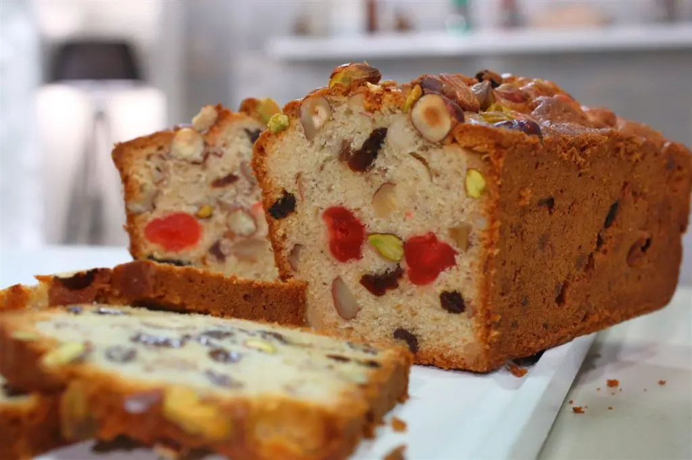

Budín Inglés

Ingredientes:
100g de manteca pomada
3 huevos
220g de azúcar
370g de harina leudante
50g de frutas abrillantadas
50g de nueces
50g de pasas de uva
60cc de whisky o cognac
Preparación:
Poner en la batidora la manteca pomada con el azúcar y batir 5 minutos.
Cuando quede cremosa agregar los huevos de a uno, seguir batiendo.
Agregar el cognac y la harina.
Por último agregar toda la fruta seca, mezclar bien.
Llevar a horno precalentado a 180° en una budinera enmantecada por 50 minutos.
© 2024 Mi Blog de Cocina. Todos los derechos reservados.